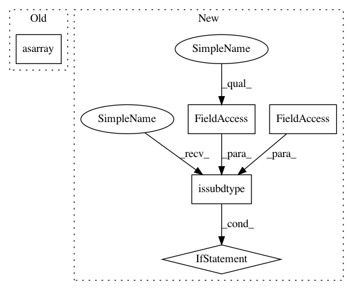

8daace20a97c65f845ed008f4b60bdc62b12e250,gensim/matutils.py,,unitvec,#Any#Any#Any#,669
Before Change
return vec
if isinstance(vec, np.ndarray):
vec = np.asarray(vec, dtype=float)
if norm == "l1":
veclen = np.sum(np.abs(vec))
if norm == "l2":
veclen = blas_nrm2(vec)
After Change
if norm == "l2":
veclen = blas_nrm2(vec)
if veclen > 0.0:
if np.issubdtype(vec.dtype, np.int):
vec = vec.astype(np.float)
if return_norm:
return blas_scal(1.0 / veclen, vec).astype(vec.dtype), veclen
else:
return blas_scal(1.0 / veclen, vec).astype(vec.dtype)
In pattern: SUPERPATTERN
Frequency: 3
Non-data size: 5
Instances
Project Name: RaRe-Technologies/gensim
Commit Name: 8daace20a97c65f845ed008f4b60bdc62b12e250
Time: 2018-04-15
Author: 35378674+o-P-o@users.noreply.github.com
File Name: gensim/matutils.py
Class Name:
Method Name: unitvec
Project Name: scikit-image/scikit-image
Commit Name: 54bf5e9f9daf14d281483ad0dbafcf36f44f5ed6
Time: 2020-02-11
Author: rfezzani@gmail.com
File Name: skimage/restoration/non_local_means.py
Class Name:
Method Name: denoise_nl_means
Project Name: RaRe-Technologies/gensim
Commit Name: 8daace20a97c65f845ed008f4b60bdc62b12e250
Time: 2018-04-15
Author: 35378674+o-P-o@users.noreply.github.com
File Name: gensim/matutils.py
Class Name:
Method Name: unitvec
Project Name: analysiscenter/batchflow
Commit Name: 54cf09b4d7fdd4a7ff80f55efd17613a7d4f3bb0
Time: 2018-01-23
Author: g.ivanov@analysiscenter.ru
File Name: dataset/batch_image.py
Class Name: ImagesBatch
Method Name: _invert_